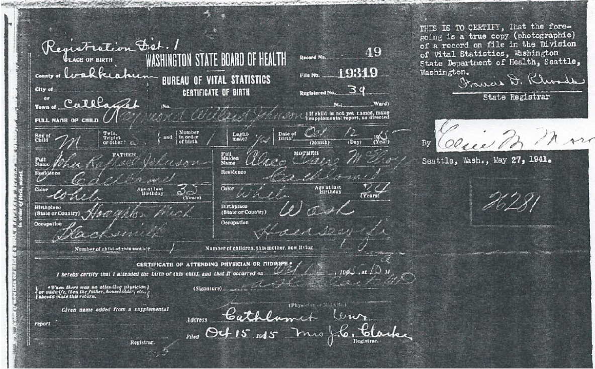

It’s hard to imagine how a little bit of spit could unravel a family mystery, but in the case of our team member Karin, that is exactly what it did.
With the advent of affordable direct-to-consumer DNA testing, millions of people have spit in a tube or swabbed their cheeks hoping to learn more about their ancestors. There’s lots of attention paid to the pie charts showing bioregional ancestry.
This sort of statistical analysis gives varying results, since each company uses a different algorithm and reference sample. While this can yield some insights, there are other techniques for uncovering the specific location of any human in the tapestry of all people. By looking at patterns of DNA shared among individuals, we can use this sort of test result to identify specific ancestors.
(We are planning to create our own chromosome map)
Below is a network graph showing triangulated segments for DNA matches to Karin. Each node represents a DNA tester. The size of the nodes corresponds to the amount of DNA each tester shares with Karin. The edges indicate shared segments. Note that we haven’t included Karin or her parents (both of whom have tested), since that would clutter the view.
This data comes from the GEDmatch database. People who have tested their DNA with different testing companies can choose to upload their results to GEDmatch. Their terms of service allow us to share insights as long as we mask the identities of anyone who hasn’t given their explicit permission to be identified. All names here are from living DNA testers who have agreed for us to share their names, or from deceased ancestors. We’ve also masked the identities of some deceased individuals who were born after 1940.
This shows us lots of clusters of interconnected people, but without context that doesn’t tell us very much. What happens if we color-code a few key individuals, and the edges connecting to them?
This view starts to show how people are related on Karin’s father’s side, as well as her maternal grandfather’s side.
Highlighting matches connected to some known relatives starts to provide some meaning to this network graph, but how do we move from this to solving mysteries about unknown people?
Karin’s surname is Borgerson. She inherited that name from her father Barry, who inherited it from his father Raymond. However, Raymond wasn’t born with that surname. He took his stepfather’s name. When he was born, his name was Raymond Willard Johnson. Here’s an image of his birth certificate:
This shows Raymond’s father as John Raphael Johnson, a blacksmith born in Houghton, Michigan around 1880. It turns out that there are a lot of men named John Johnson born about that time. However, extensive research in the paper trail does not identify a John Johnson who appears to be the right man. Family lore says that John Johnson originally had a French surname, but changed it because it was “unpronounceable”. Before incorporating DNA, Karin’s research hit a brick wall at her great-grandfather John Johnson(?).
Barry Borgerson (Karin’s dad) agreed to spit in a tube for AncestryDNA. His DNA matches included a large number of people descended from French Canadians and early white inhabitants of Wisconsin, and these people also shared DNA with a known paternal cousin. Because the ancestry of Barry’s paternal grandmother was fairly well known and didn’t include anyone from Quebec or Wisconsin, this suggested that these matches were likely on the John Johnson side of the family. We won’t bore you with the details, but a lot of research uncovered how some of those matches were related to one another.
We plan to finish telling this story for our final submission.